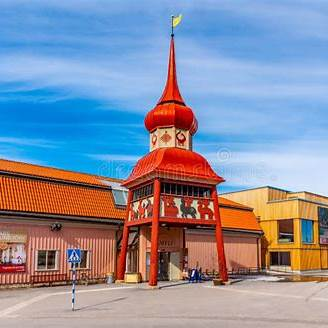
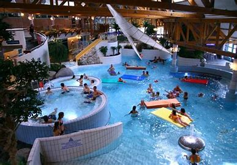
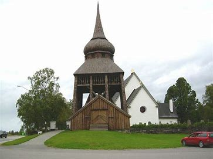
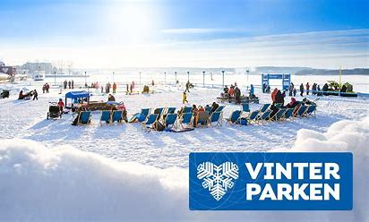
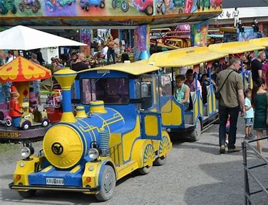
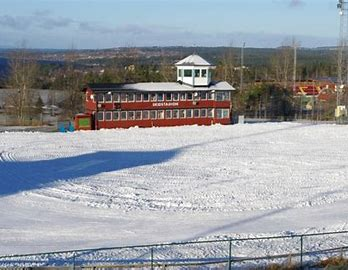
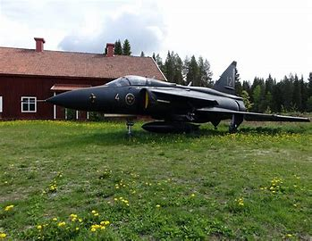
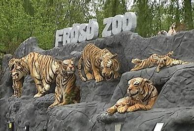
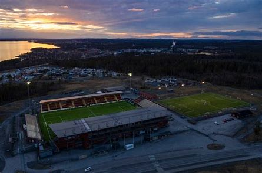

Östersund erbjuder en mängd aktiviteter och sevärdheter för besökare i alla åldrar. Här är några förslag på saker att göra i staden:
1. Jamtli

2. Storsjöbadet

3. Frösö kyrka

4. Vinterparken

5. Moose Garden

6. Östersunds skidstadion

7. Teknikland

8. Frösö Zoo

9. Östersund Arena

Huvudsidan
Dessa är bara några exempel på vad Östersund har att erbjuda. Staden kombinerar stadsliv med närhet till naturen, vilket gör den till en attraktiv destination året om.